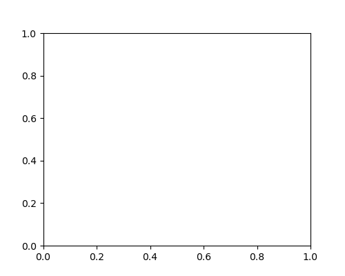
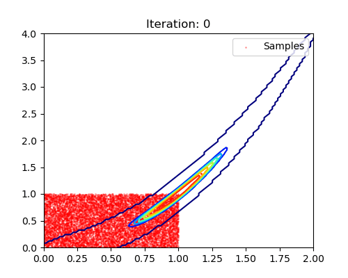
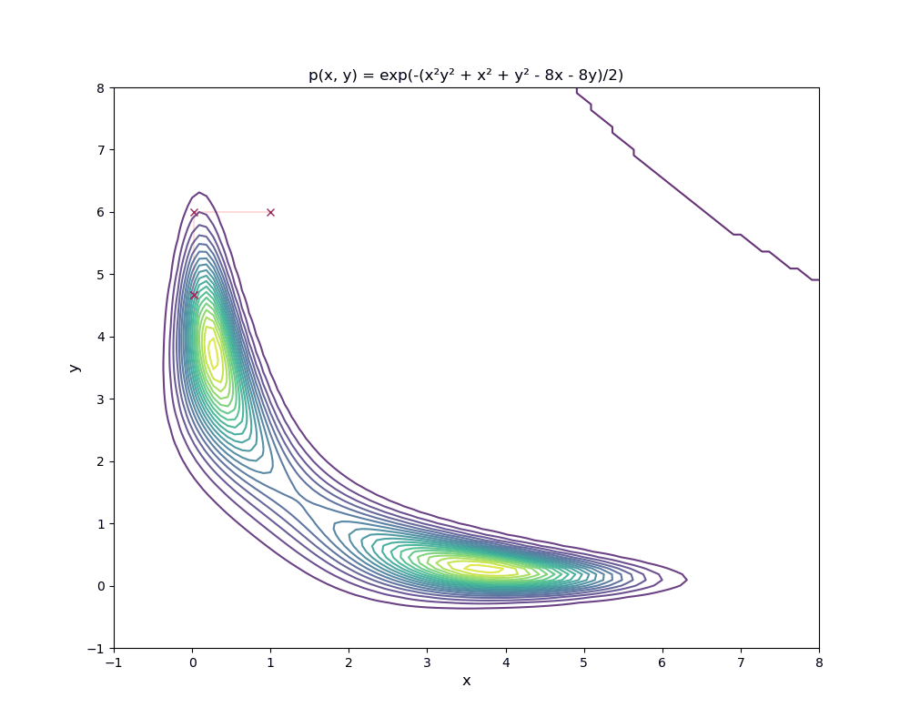

Sampling From a Distribution
Metropolis–Hastings Algorithm
The Metropolis–Hastings algorithm can draw samples from any probability distribution with probability density \(P(x)\), provided that we know a function \(f(x)\) proportional to the density \(P(x)\) and the values of \(f(x)\) can be calculated, The requirement that \(f(x)\) must only be proportional to the density, rather than exactly equal to it, makes the Metropolis–Hastings algorithm particularly useful, because calculating the necessary normalization factor is often extremely difficult in practice 1. For example, in Energy-Based Models, the unnormalized distribution, \(\exp(-E(x))\), can be used as \(f(x)\).
Algorithm: Metropolis-Hastings
- Input
- Target distribution \(P(x)\)
- Proposal distribution \(g(x'|x)\)
- Initial state \(x_0\)
- Output: Sequence of samples \({x_1, x_2, \ldots, x_n}\)
- Steps
- Initialize
- Pick an initial state \(x_0\)
- Set \(t = 0\)
- Iterate
- Generate a random candidate state \(x'\) according to \(g(x'|x)\)
- Calculate the acceptance probability: \[ A(x', x_t) = \min(1, \frac{P(x') g(x|x')}{P(x)g(x'|x)}) \] note that if the propose distribution \(g(x'|x)\) is symmetric, \(g(x| x') == g(x'|x)\)
- Accept or reject:
- Generate a uniform random number \(u \in [0,1]\)
- \(x_{t+1} = x'\) if \(u \leq A(x', x)\) otherwise copy the old state forward \(x_{t+1} = x\)
- Increment: set \(t = t + 1\)
- Repeat step 2 until desired number of samples
- Initialize
Examples
1-D example
import numpy as np import matplotlib.pyplot as plt import torch from matplotlib.animation import PillowWriter N = 1000 def f(x): return torch.exp(-(x - 5)**2) def q(x): return torch.normal(x, 1) def metroplis_hastings_algo(X, ax, writer = None): if writer is None: plt.ion() x_vals = torch.linspace(0, 10, 1000) ground_truth_density = f(x_vals) if writer is not None: writer.grab_frame() for i in range(20): Y = q(X) alpha = f(Y) / f(X) u = torch.rand(N) _,_, nn = ax.hist(X.numpy(), label="Samples", color='r', alpha = 0.8, density=True) X = torch.where(u <= alpha, Y, X) lines = ax.plot(x_vals, ground_truth_density, label="Unnormalized GT Dist", color='b', linewidth=2) ax.set_xlim([-1, 10]) ax.set_title(f"iteration: {i}") ax.legend() if writer is not None: writer.grab_frame() else: plt.pause(0.1) nn.remove() lines[0].remove() return X writer = PillowWriter(fps=3) fig, ax = plt.subplots(figsize=(5, 4)) X = torch.rand(N) with writer.saving(fig, "mh_demo.gif", 100): metroplis_hastings_algo(X, ax, writer)

2-D example
import numpy as np import matplotlib.pyplot as plt import torch from matplotlib.animation import PillowWriter from MCMC_samplers import (metroplis_hastings_sampler) N = 10000 def f(X): x = X[:, 0] y = X[:, 1] a, b = 1, 10 k = 100 return torch.exp( - k * ((a - x) ** 2 + b * (y - x**2)**2) ** 2) def q(x): return torch.normal(x) def visualize_sampling(samples, output_file="HM_demo2.gif"): """Visualize pre-computed samples""" fig, ax = plt.subplots(figsize=(5, 4)) writer = PillowWriter(fps=3) # Plot ground truth contour xx = torch.linspace(0, 2, 100) yy = torch.linspace(0, 4, 100) xg, yg = np.meshgrid(xx, yy) coords = torch.stack([torch.tensor(xg).ravel(), torch.tensor(yg).ravel()], dim=1) z = f(coords).reshape(xg.shape) ax.contour(xg, yg, z, cmap='jet', alpha=1.0) ax.set_xlim([0, 2.0]) ax.set_ylim([0, 4.0]) with writer.saving(fig, output_file, 100): for i, X in enumerate(samples): lines = ax.scatter(X[:, 0], X[:, 1], c='r', label='Samples', alpha=0.3, s=1) ax.set_title(f"Iteration: {i}") ax.legend() writer.grab_frame() lines.remove() # Run sampling and visualization X = torch.rand(N, 2) samples = metroplis_hastings_sampler(X, f, q, n_iterations=50) visualize_sampling(samples)

Gibbs sampling
ref: https://www.tweag.io/blog/2020-01-09-mcmc-intro2/ https://en.wikipedia.org/wiki/Gibbs_sampling
The Gibbs Sampling is a Monte Carlo Markov Chain method that iteratively draws an instance from the distribution of each variable, conditional on the current values of the other variables in order to estimate complex joint distributions.
Let's explain it with an example. In this example, let's assume the 'unnormalized' probability model, \(\hat{p}(X)\) is: \[ \hat{p}(X) = \exp(-(x^2 y^2 + x^2+ y^2-8x-8y)/2) \] where \(X \in R^2\) and \(X :=[x, y]^\top\). The distribution looks like:

In this example, we can derive the explicit form for conditional distribution. Given the unnormalized distribution: \[p(x, y) = \exp\left(-\frac{x^2y^2 + x^2 + y^2 - 8x - 8y}{2}\right)\] the conditional distribution is \[p(x|y) = \frac{1}{\sqrt{2\pi\sigma^2}} \exp\left(-\frac{(x - \mu)^2}{2\sigma^2}\right)\] where \(\mu = \frac{4}{y^2 + 1}\) and \(\sigma^2 = \frac{1}{y^2 + 1}\).
Derivation details, click to expand
By definition of conditional probability: \[p(x|y) = \frac{p(x,y)}{p(y)} \propto p(x,y)\]
Since \(p(y)\) is constant with respect to \(x\), we keep only terms involving \(x\): \[p(x|y) \propto \exp\left(-\frac{x^2y^2 + x^2 - 8x}{2}\right)\]
Factor out \(x^2\) terms: \[p(x|y) \propto \exp\left(-\frac{x^2(y^2 + 1) - 8x}{2}\right)\]
Complete the square in \(x\):
\begin{eqnarray*} x^2(y^2 + 1) - 8x &=& (y^2 + 1)\left[x^2 - \frac{8x}{y^2 + 1}\right] \\ &=& (y^2 + 1)\left[\left(x - \frac{4}{y^2 + 1}\right)^2 - \frac{16}{(y^2 + 1)^2}\right] \\ &=& (y^2 + 1)\left(x - \frac{4}{y^2 + 1}\right)^2 - \frac{16}{y^2 + 1} \end{eqnarray*}Substituting back: \[p(x|y) \propto \exp\left(-\frac{(y^2 + 1)\left(x - \frac{4}{y^2 + 1}\right)^2}{2}\right)\]
This is the kernel of a Gaussian distribution. Therefore: \[\boxed{p(x|y) = \mathcal{N}\left(\mu = \frac{4}{y^2 + 1}, \, \sigma^2 = \frac{1}{y^2 + 1}\right)}\]
Or equivalently: \[p(x|y) = \frac{1}{\sqrt{2\pi\sigma^2}} \exp\left(-\frac{(x - \mu)^2}{2\sigma^2}\right)\]
where \(\mu = \frac{4}{y^2 + 1}\) and \(\sigma^2 = \frac{1}{y^2 + 1}\).
Having the conditional distribution, we can then iteratively sample \(x\) from \(p(x|y)\) and \(y\) from \(p(y|x)\). The result is shown below:
import numpy as np import scipy as sp import matplotlib.pyplot as plt import pandas as pd import sys import torch from matplotlib.animation import PillowWriter from MCMC_samplers import metroplis_hastings_sampler from MCMC_samplers import (metroplis_hastings_sampler) # p(x, y) f_np = lambda x, y: np.exp(-(x*x*y*y+x*x+y*y-8*x-8*y)/2.) f = lambda X: torch.exp(-(X[:, 0]**2 * X[:, 1]**2 + X[:, 0]**2 + X[:, 1]**2 - 8*X[:, 0] - 8*X[:, 1])/2.) q = lambda x: torch.normal(x, 0.5) xx = np.linspace(-1, 8, 100) yy = np.linspace(-1, 8, 100) xg,yg = np.meshgrid(xx, yy) z = f_np(xg.ravel(), yg.ravel()) z2 = z.reshape(xg.shape) plt.contour(xg, yg, z2, levels=20, cmap='viridis') plt.colorbar(label='p(x, y)') plt.savefig("base_dist.png") def gibbs_sampler(X0, f, q, n_iterations, mh_steps=10): """Gibbs sampling using Metropolis-Hastings for conditional distributions Args: X0: Initial sample as torch.tensor of shape (1, 2) with [x, y] f: Joint probability density function f(X) where X is shape (N, 2) q: Proposal distribution function for MH n_iterations: Number of Gibbs iterations mh_steps: Number of MH steps for each conditional sampling Returns: samples: torch.tensor of shape (N, 2) containing all samples """ N = 2 * n_iterations + 1 samples = torch.zeros(N, 2) samples[0] = X0 for i in range(1, N - 1, 2): # Sample x | y using MH (fix y, sample x) y_fixed = samples[i-1, 1] current_x = samples[i-1, 0] for _ in range(mh_steps): proposal_x = q(current_x.unsqueeze(0)).squeeze() current_point = torch.tensor([[current_x, y_fixed]]) proposal_point = torch.tensor([[proposal_x, y_fixed]]) alpha = f(proposal_point) / f(current_point) if torch.rand(1) <= alpha: current_x = proposal_x samples[i, 0] = current_x samples[i, 1] = y_fixed # Sample y | x using MH (fix x, sample y) x_fixed = samples[i, 0] current_y = samples[i, 1] for _ in range(mh_steps): proposal_y = q(current_y.unsqueeze(0)).squeeze() current_point = torch.tensor([[x_fixed, current_y]]) proposal_point = torch.tensor([[x_fixed, proposal_y]]) alpha = f(proposal_point) / f(current_point) if torch.rand(1) <= alpha: current_y = proposal_y samples[i+1, 1] = current_y samples[i+1, 0] = x_fixed return samples def visualize_gibbs_sampling(samples, xg, yg, z2, output_file="gibbs_samples.gif"): """Visualize pre-computed Gibbs samples Args: samples: torch.tensor of shape (N, 2) containing samples """ x = samples[:, 0].numpy() y = samples[:, 1].numpy() writer = PillowWriter(fps=3) fig, ax = plt.subplots(figsize=(10, 8), dpi=150) ax.contour(xg, yg, z2, levels=20, cmap='viridis', alpha=0.8) ax.set_xlabel('x', fontsize=12) ax.set_ylabel('y', fontsize=12) ax.set_title('p(x, y) = exp(-(x²y² + x² + y² - 8x - 8y)/2)') ax.set_xlim([-1, 8]) ax.set_ylim([-1, 8]) with writer.saving(fig, output_file, 100): for i in range(1, len(x) - 1, 2): ax.plot(x[i-1:i+2], y[i-1:i+2], '-xr', linewidth=0.2) writer.grab_frame() # Run sampling and visualization N = 100 X0 = torch.tensor([[1.0, 6.0]]) samples = gibbs_sampler(X0, f, q, n_iterations=N) visualize_gibbs_sampling(samples, xg, yg, z2)
